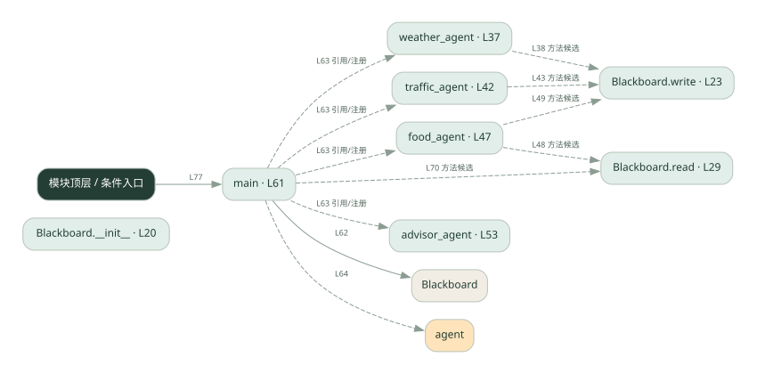

2-13 · 全课程第 33 节
黑板协作
031.py
源码快照 709633f6bac0 · 静态解析 · 2026-09-10
01 / 要完成的事
所有角色读写同一块黑板，逐步补齐最终建议所需的信息。
02 / 为什么要做
角色不必两两传消息，可以从公共状态发现已有资料。
03 / 当前代码状态
Blackboard.write/read 以及 advisor_agent 的关键逻辑未实现。main 用列表中的 agent 变量间接调用四个角色，但黑板不会被正确填充。
检测到 None 赋值或 pass 的位置：27, 33, 57。这些也可能是正常初始化，需结合下方函数职责与源码判断；不能仅凭没有下划线认定完成。
主要展示本地计算、内存状态或模拟流程；是否写文件/启动子进程请看调用表。 本次只做静态解析，没有运行练习，也没有替你填写或修改原代码。
04 / 调用图
打开大图 ↗实线：源码中的直接调用；虚线：函数引用/注册、动态调用或按方法名推断的候选。L 是调用所在源码行号。箭头不表示执行顺序或每次必经；分支、循环、异步调度及框架内部调用需结合源码。灰色是外部/未解析目标，橙色是动态分发；省略 print、len 和常规容器操作以减少干扰。孤立函数可能尚未接入。

先从 main 及模块入口 出发，沿箭头找到本文件函数，再查看外部调用或动态分发。右侧调用清单保留所有静态调用点，能回到原文件逐行对照。
05 / 函数定位
| 函数 / 定义行 | 职责（源码注释） | 内部调用 |
|---|---|---|
Blackboard.__init__L20 | 以源码函数体为准；下列调用展示其依赖。 | 未发现显式函数调用（可能直接计算、读写状态或尚未实现） |
Blackboard.writeL23 | 以源码函数体为准；下列调用展示其依赖。 | 未发现显式函数调用（可能直接计算、读写状态或尚未实现） |
Blackboard.readL29 | 以源码函数体为准；下列调用展示其依赖。 | 未发现显式函数调用（可能直接计算、读写状态或尚未实现） |
weather_agentL37 | 以源码函数体为准；下列调用展示其依赖。 | bb.write |
traffic_agentL42 | 以源码函数体为准；下列调用展示其依赖。 | bb.write |
food_agentL47 | 以源码函数体为准；下列调用展示其依赖。 | bb.read, bb.write |
advisor_agentL53 | 以源码函数体为准；下列调用展示其依赖。 | 未发现显式函数调用（可能直接计算、读写状态或尚未实现） |
mainL61 | 以源码函数体为准；下列调用展示其依赖。 | Blackboard, print, agent, bb.data.items, bb.read |
这样做的优点
中间结果集中、方便检查与复用。
代价与局限
字段约定和执行顺序隐含依赖；并发写入、过期信息需额外管理。
适用场景
多个步骤补齐一个结构化结果。
不宜直接照搬
严格隔离数据、或无共同状态结构的任务。
动手检验理解
先执行依赖天气的推荐者，检查缺失天气时输出是否合理。
有未实现位置时先预测，再补齐验证。能启动不等于逻辑正确。
查看全部 21 个静态调用 / 引用点
| 调用方 | 目标 | 源码行 | 类型 |
|---|---|---|---|
| weather_agent | bb.write | 38 | 调用 |
| traffic_agent | bb.write | 43 | 调用 |
| food_agent | bb.read | 48 | 调用 |
| food_agent | bb.write | 49 | 调用 |
| main | Blackboard | 62 | 调用 |
| main | print | 64 | 调用 |
| main | agent | 64 | 调用 |
| main | print | 66 | 调用 |
| main | bb.data.items | 67 | 调用 |
| main | print | 68 | 调用 |
| main | print | 70 | 调用 |
| main | bb.read | 70 | 调用 |
| <模块入口> | print | 74 | 调用 |
| <模块入口> | print | 75 | 调用 |
| <模块入口> | print | 76 | 调用 |
| <模块入口> | main | 77 | 调用 |
| <模块入口> | print | 78 | 调用 |
| main | weather_agent | 63 | 引用/注册 |
| main | traffic_agent | 63 | 引用/注册 |
| main | food_agent | 63 | 引用/注册 |
| main | advisor_agent | 63 | 引用/注册 |